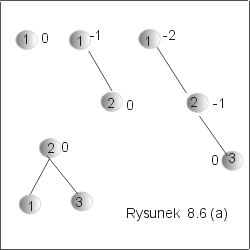
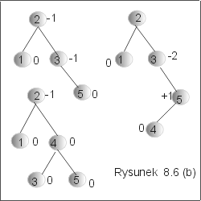
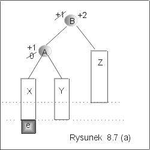
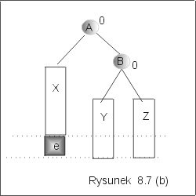
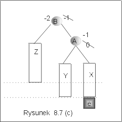
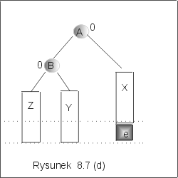
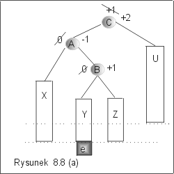
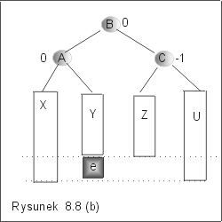
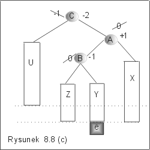
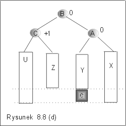

| « poprzedni punkt | nastêpny punkt » |
Operacja wstawiania elementu do drzewa AVL, etykietowanego elementami zbioru Et,
insert : AVL ´ Et ® AVL,
mo¿e byæ zrealizowana tak jak dla drzew binarnych poszukiwañ. Problem polega na tym, ¿e nie zawsze otrzymujemy w wyniku drzewo wywa¿one. Metoda wstawiania elementu do drzewa AVL sk³ada siê wiêc z trzech etapów:
Przyk³ad 3.1
Kolejne etapy tworzenia drzewa AVL z elementów 1,2,3,5,4 przedstawiono na
rysunku 8.6(a) i 8.6(b).
|  |  |
Po do³±czeniu etykiety 3, otrzymane drzewo nie jest drzewem AVL, poniewa¿ waga w korzeniu wynosi teraz -2. Prosta rotacja w lewo pozwoli jednak zrównowa¿yæ to drzewo, jak pokazano na rysunku 8.6 (a). Wstawienie etykiety 5 do prawego poddrzewa powoduje zwiêkszenie wysoko¶ci ca³ego drzewa, ale wagi s± nadal dopuszczalne (por. rysunek 8.6(b)). Nowy element 4 równie¿ zwiêksza wysoko¶æ, ale teraz waga wierzcho³ka 3 nie jest odpowiednia, wynosi bowiem -2. £atwo zauwa¿yæ, ¿e prosta rotacja w lewo wzglêdem 3 nie poprawi sytuacji. Jednak zastosowanie rotacji podwójnej doprowadza drzewo do stanu wywa¿enia, por. ostatni z grafów na rysunku 8.6(b). J
Sformu³ujemy teraz ogólne zasady wywa¿ania, gdy do drzewa AVL wstawiamy nowy element. Regu³y postêpowania zale¿± od tego jakie s± aktualne wagi wierzcho³ków i gdzie zostanie dowi±zany nowy wierzcho³ek.
Niech D bêdzie drzewem AVL, D = <LD, r, PD>, do którego wstawiamy etykietê e. Niech D' oznacza drzewo otrzymane w wyniku zastosowania algorytmu insert(e,D) dla drzew BST. Za³ó¿my, ¿e nowy wierzcho³ek z etykiet± e zosta³ dowi±zany w lewym poddrzewie drzewa D i ¿e spowodowa³o to zwiêkszenie wysoko¶ci drzewa LD, ale LD nadal pozostaje drzewem wywa¿onym. Wynika st±d, ¿e przed wstawieniem nowego wierzcho³ka, waga w korzeniu drzewa LD musia³a byæ równa 0. Zachodz± nastêpuj±ce przypadki:
1. Je¿eli waga w wierzcho³ku drzewa D wynosi³a 0, to po do³±czeniu e, wynosi 1. Otrzymane drzewo D' jest wiêc drzewem AVL, chocia¿ jego wysoko¶æ jest o 1 wiêksza ni¿ drzewa D.
2. Je¿eli waga w wierzcho³ku drzewa D wynosi³a -1, to po do³±czeniu e wynosi 0. Otrzymane drzewo jest wywa¿one, a jego wysoko¶æ jest taka sama jak drzewa D.
3. Je¿eli waga w wierzcho³ku drzewa D wynosi³a +1, to po do³±czeniu e wynosi +2. Zatem drzewo D' nie jest wywa¿one. Typ u¿ytej rotacji zale¿y od tego, czy e zosta³o do³±czone do lewego, czy do prawego poddrzewa drzewa LD.
3a. Element e znajduje siê w lewym poddrzewie drzewa LD. Waga korzenia drzewa LD zmieni³a siê z 0 na +1. Zastosowanie pojedynczej rotacji w prawo pozwoli wywa¿yæ otrzymane drzewo. Na rysunku rysunek 8.7 (a) przedstawiono opisan± w tym przypadku sytuacjê przed i po wykonaniu wstawienia elementu e, a na rysunku 8.7(b) rezultat zastosowania prostej rotacji w prawo. Zauwa¿my, ¿e wysoko¶æ otrzymanego drzewa jest taka sama jak wysoko¶æ danego drzewa przed wstawieniem elementu e.
|  |  |
|  |  |
3b. Element e zosta³ do³±czony do prawego poddrzewa drzewa LD. Waga drzewa LD zmieni³a siê wiêc z 0 na -1. Otrzymane drzewo nie jest wywa¿one. Zastosowanie rotacji podwójnej w prawo pozwoli je jednak wywa¿yæ. Sytuacja opisana w tym przypadku, jest przedstawiona na rysunku 8.8(a). Skre¶lone wagi odpowiadaj± stanowi drzewa przed wykonaniem do³±czenia etykiety e. Wynik wywa¿ania jest natomiast przedstawiony na rysunku 8.8(b). Jak poprzednio, zauwa¿my, ¿e wysoko¶æ drzewa po wykonaniu rotacji jest taka sama jak wysoko¶æ drzewa D.
|  |  |
|  |  |
Analogicznie, je¿eli nowy wierzcho³ek z etykiet± e zosta³ dowi±zany w prawym poddrzewie drzewa D i spowodowa³o to zwiêkszenie wysoko¶ci drzewa PD, ale PD nadal pozostaje drzewem wywa¿onym. Wynika st±d, ¿e przed wstawieniem nowego wierzcho³ka, waga w korzeniu drzewa PD musia³a byæ równa 0. Zachodz± trzy nastêpuj±ce przypadki:
1. Je¿eli waga w wierzcho³ku drzewa D wynosi³a 0, to po do³±czeniu e, wynosi -1. Otrzymane drzewo D' jest wiêc drzewem AVL, chocia¿ jego wysoko¶æ jest o 1 wiêksza ni¿ drzewa D.
2. Je¿eli waga w wierzcho³ku drzewa D wynosi³a +1, to po do³±czeniu e wynosi 0. Otrzymane drzewo jest wywa¿one, a jego wysoko¶æ jest taka sama jak drzewa D.
3. Je¿eli waga w wierzcho³ku drzewa D wynosi³a -1, to po do³±czeniu e wynosi -2. Zatem drzewo D' nie jest wywa¿one. Typ u¿ytej rotacji zale¿y od tego, czy e zosta³o do³±czone do prawego, czy do lewego poddrzewa drzewa PD. W pierwszym przypadku opisanym na rysunku 8.7(c) zastosujemy prost± rotacjê w lewo, która wywa¿y drzewo (por. 8.7 (d)). W drugim przypadku, przedstawionym na rysunku 8.8(c) zastosujemy podwójn± rotacjê w lewo. Otrzymany wynik jest przedstawiony na rysunku 8.8(d).
Pytanie 3:
Ile co najwy¿ej rotacji trzeba wykonaæ, je¶li do drzewa AVL o n
wierzcho³kach do³±czamy jeden element?
| « poprzedni punkt | nastêpny punkt » |